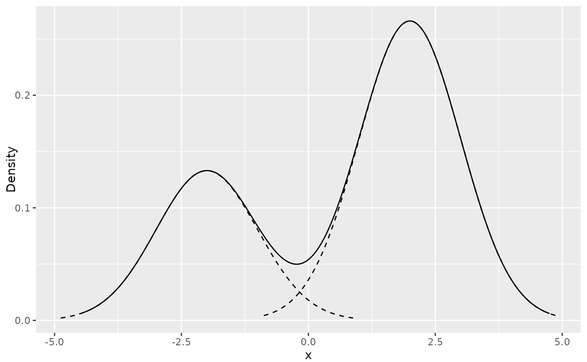

Add ggplot layer of densities from distributional objects in 1 dimension
Source:R/gg_density_layer.R
gg_density_layer.RdAdd ggplot layer of densities from distributional objects in 1 dimension
Details
This function adds a ggplot layer of a density from a distributional object. For univariate densities, it adds a line plot of the density function. For bivariate densities, it adds a contour plot of the density function.
Examples
dist_mixture(
dist_normal(-2, 1),
dist_normal(2, 1),
weights = c(1 / 3, 2 / 3)
) |>
gg_density() +
gg_density_layer(dist_normal(-2, 1), linetype = "dashed", scale = 1 / 3) +
gg_density_layer(dist_normal(2, 1), linetype = "dashed", scale = 2 / 3)
